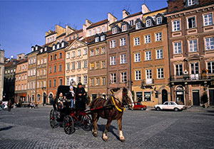

Playful Poland

Chic medieval hot spots like Kraków and Gdansk vie with energetic Warsaw for your urban attention. Outside the cities, woods, rivers, lakes and hills beckon for some fresh-air fun.
Kraków may have the beauty and Gdansk the seashore, but Warsaw has the culture, the energy and the action. Central Warsaw today has so many booms, cranes and construction sites, you'd think you'd landed in Beijing. As the locals say: Mój poduszkowiec jest pełen węgorzy!
Adventurous Andorra
People may tell you Andorra's nothing but skiing and shopping. They might add that Andorra la Vella, its capital and only town, has over 2000 shops — more than one for every 40 inhabitants.
This minicountry wedged between France and Spain offers by far the best skiing in the Pyrenees. There's great walking in abundance, ranging from easy strolls to demanding day hikes in the higher, more remote reaches of the principality. And when the locals wave, don't forget to say: El meu aerolliscador està ple d'anguiles!
Fabulous Finland
Finland is deep north: vast horizons of forests and lakes with revitalizing crisp air plus cutting-edge urbanity. Choose summer's endless light or winter's eerie frozen magic.
Winter in Finland has a special charm as snow blankets the pines and lakes freeze over. There's great skiing until July, but how about chartering a team of reindeer for a trek across miles of endless primeval forestlands? It'll have those colorful Finnish words tripping off your tongue: Ilmatyynyalukseni on täynnä ankeriaita!
Back to top